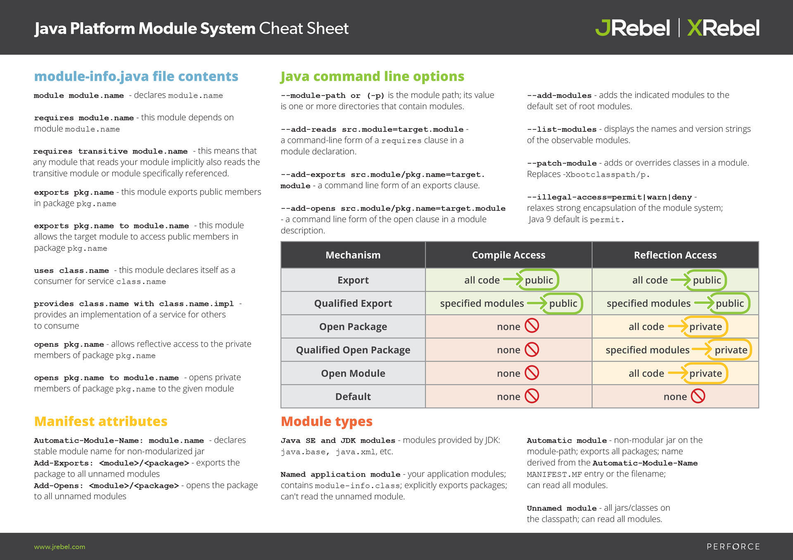

- 00 开篇词 拥抱Java新特性，像设计者一样工作和思考.md.html
- 01 JShell：怎么快速验证简单的小问题？.md.html
- 02 文字块：怎么编写所见即所得的字符串？.md.html
- 03 档案类：怎么精简地表达不可变数据？.md.html
- 04 封闭类：怎么刹住失控的扩展性？.md.html
- 05 类型匹配：怎么切除臃肿的强制转换？.md.html
- 06 switch表达式：怎么简化多情景操作？.md.html
- 07 switch匹配：能不能适配不同的类型？.md.html
- 08 抛出异常，是不是错误处理的第一选择？.md.html
- 09 异常恢复，付出的代价能不能少一点？.md.html
- 10 Flow，是异步编程的终极选择吗？.md.html
- 11 矢量运算：Java的机器学习要来了吗？.md.html
- 12 外部内存接口：零拷贝的障碍还有多少？.md.html
- 13 外部函数接口，能不能取代Java本地接口？.md.html
- 14 禁止空指针，该怎么避免崩溃的空指针？.md.html
- 15 现代密码：你用的加密算法过时了吗？.md.html
- 16 改进的废弃，怎么避免使用废弃的特性？.md.html
- 17 模块系统：为什么Java需要模块化？.md.html
- 18 模块系统：怎么模块化你的应用程序？.md.html
- 用户故事 与新特性开发者对话.md.html
- 用户故事 保持好奇心，积极拥抱变化.md.html
- 捐赠
18 模块系统：怎么模块化你的应用程序？
你好，我是范学雷。今天，我们继续讨论Java平台模块系统（Java Platform Module System，JPMS）。
Java平台模块系统是在JDK 9正式发布的。在上一讲我们也说过，这项重要的技术从萌芽到诞生，花费了十多年的时间，堪称Java出现以来最重要的新软件工程技术。
模块化可以帮助各级开发人员在构建、维护和演进软件系统时提高工作效率。更让人满意的是，它还非常简单、直观。我们不需要太长的学习时间就能快速掌握它。
这一节课，我们就一起来看看应该怎么使用Java平台模块系统。
阅读案例
在前面的课程里，我们多次使用了Digest这个案例来讨论问题。在这些案例里，我们把实现的代码和接口定义的代码放在了同一个文件里。对于一次Java新特性的讨论来说，这样做也许是合适的。我们可以使用简短的代码，快速、直观地展示新特性。
public sealed abstract class Digest {
private static final class SHA256 extends Digest {
// snipped, implementation code.
}
private static final class SHA512 extends Digest {
// snipped, implementation code.
}
public static Returned<Digest> of(String algorithm) {
// snipped, implementation code.
}
public abstract byte[] digest(byte[] message);
}
但是，如果放到生产环境，这样的示例就不一定是一个好的导向了。因为，Digest的算法可能有数十种。其中有老旧废弃的算法，有即将退役的算法，还有当前推荐的算法。把这些算法的实现都装到一个瓶子里，似乎有点拥挤。
而且，不同的算法，可能有不同的许可证和专利限制；实现的代码也可能是由不同的个人或者公司提供的。同一个算法，可能还会有不同的实现：有的实现需要硬件加速，有的实现需要使用纯Java代码。这些情况下，这些实现代码其实都是没有办法装到同一个瓶子里的。
所以，典型的做法就是分离接口和实现。
首先，我们来看一看接口的设计。下面的代码就是一个接口定义的例子。
package co.ivi.jus.crypto;
import java.util.ServiceLoader;
public interface Digest {
byte[] digest(byte[] message);
static Returned<Digest> of(String algorithm) {
ServiceLoader<DigestManager> serviceLoader =
ServiceLoader.load(DigestManager.class);
for (DigestManager cryptoManager : serviceLoader) {
Returned<Digest> rt = cryptoManager.create(algorithm);
switch (rt) {
case Returned.ReturnValue rv -> {
return rv;
}
case Returned.ErrorCode ec -> {
continue;
}
}
}
return Returned.UNDEFINED;
}
}
在这个例子里，我们只定义了Digest的公开接口，以及实现获取的方法（使用ServiceLoader），而没有实现具体算法的代码。同时呢，我们希望Digest接口所在的包也是公开的，这样应用程序可以方便地访问这个接口。
有了Digest的公开接口，我们还需要定义连接公开接口和私有实现的桥梁，也就是实现的获取和供给办法。下面这段代码，定义的就是这个公开接口和私有实现之间的桥梁。Digest公开接口的实现代码需要访问这个桥梁接口，所以它也是公开的接口。
package co.ivi.jus.crypto;
public interface DigestManager {
Returned<Digest> create(String algorithm);
}
然后，我们来看看Digest接口实现的部分。有了Digest的公开接口和实现的桥梁接口，Digest的实现代码就可以放置在另外一个Java包里了。比如，下面的例子里，我们把Sha256的实现，放在了co.ivi.jus.impl这个包里。
package co.ivi.jus.impl;
import co.ivi.jus.crypto.Digest;
import co.ivi.jus.crypto.Returned;
final class Sha256 implements Digest {
static final Returned.ReturnValue<Digest> returnedSha256;
// snipped
private Sha256() {
// snipped
}
@Override
public byte[] digest(byte[] message) {
// snipped
}
}
因为这只是一个算法的实现代码，我们不希望应用程序直接调用实现的子类，也不希望应用程序直接访问这个Java包。所以，Sha256这个子类，使用了缺省的访问修饰符。
同时，在这个Java包里，我们也实现了Sha256的间接获取方式，也就是实现了桥梁接口。
package co.ivi.jus.impl;
// snipped
public final class DigestManagerImpl implements DigestManager {
@Override
public Returned<Digest> create(String algorithm) {
return switch (algorithm) {
case "SHA-256" -> Sha256.returnedSha256;
case "SHA-512" -> Sha512.returnedSha512;
default -> Returned.UNDEFINED;
};
}
}
稍微有点遗憾的是，由于ServiceLoader需要使用public修饰的桥梁接口，所以我们不能使用除了public以外的访问修饰符。也就是说，如果应用程序加载了这个Java包，它就可以直接使用DigestManagerImpl类。这当然不是我们期望的使用办法。
我们并不希望应用程序直接使用DigestManagerImpl类，然而JDK 8之前的Java世界里，我们并没有简单有效的、强制性的封装办法。所以，我们的解决办法通常是对外宣称：“co.ivi.jus.impl”这个包是一个内部Java包，请不要直接使用。这需要应用程序的开发者仔细地阅读文档，分辨内部包和公开包。
但在Java 9之后的Java世界里，我们就可以使用Java模块来限制应用程序使用DigestManagerImpl类了。
使用Java模块
下面我们来一起看看，Java模块是怎么实现这样的限制的。
模块化公开接口
首先呢，我们把公开接口的部分，也就是co.ivi.jus.crypto这个Java包封装到一个Java模块里。我们给这个模块命名为jus.crypto。Java模块的定义，使用的是module-info.java这个文件。这个文件要放在源代码的根目录下。下面的代码，就是我们封装公开接口的部分的module-info.java文件。
module jus.crypto {
exports co.ivi.jus.crypto;
uses co.ivi.jus.crypto.DigestManager;
}
第一行代码里的“module”，就是模块化定义的关键字。紧接着module的就是要定义的模块的名字。在这个例子里，我们定义的是jus.crypto这个Java模块。
第二行代码里的“exports”, 说明了这个模块允许外部访问的API，也就是这个模块的公开接口。“模块的公开接口”，是一个Java模块带来的新概念。
没有Java模块的时候，除了内部接口，我们可以把public访问修饰符修饰的外部接口看作是公开的接口。这样的规则，需要我们去人工分辨内部接口和外部接口。
但有了Java模块之后我们就知道，使用了“exports”模块定义、并且使用了public访问修饰符修饰的接口，就是公开接口。这样，公开接口就有了清晰的定义，我们就不用再去人工分辨内部接口和外部接口了。
而第四行代码里的“uses”呢，则说明这个模块直接使用了DigestManager定义的服务接口。
你看，这么简短的五行代码，就把co.ivi.jus.crypto这个Java模块化了。它定义了公开接口以及要使用的服务接口。
模块化内部接口
然后呢，我们要把内部接口的部分，也就是co.ivi.jus.impl这个Java包也封装到一个Java模块里。下面的代码，就是我们封装内部接口部分的module-info.java文件。
module jus.crypto.impl {
requires jus.crypto;
provides co.ivi.jus.crypto.DigestManager with co.ivi.jus.impl.DigestManagerImpl;
}
在这里，第一行代码定义了jus.crypto.impl这个Java模块。
第二行代码里的“requires”说明，这个模块需要使用jus.crypto这个模块。也就是说，定义了这个模块的依赖关系。有了这个明确定义的依赖关系，加载这个模块的时候，Java运行时就不再需要地毯式地搜索依赖关系了。
第四行代码里的“provides”说明，这个模块实现了DigestManager定义的服务接口。同样的，有了这个明确的定义，服务接口实现的搜索，也不需要地毯式地排查了。
需要注意的是，这个模块并没有使用“exports”定义模块的公开接口。这也就意味着，虽然在co.ivi.jus.impl这个Java包里，有使用public访问修饰符修饰的接口，它们也不能被模块外部的应用程序访问。这样，我们就不用担心应用程序直接访问DigestManagerImpl类了。取而代之的，应用程序只能通过DigestManager这个公开的接口，间接地访问这个实现类。这是我们想要的封装效果。
模块化应用程序
有了公开接口和实现，我们再来看看该怎么模块化应用程序。下面的代码，是我们使用了Digest公开接口的一个小应用程序。
package co.ivi.jus.use;
import co.ivi.jus.crypto.Digest;
import co.ivi.jus.crypto.Returned;
public class UseCase {
public static void main(String[] args) {
Returned<Digest> rt = Digest.of("SHA-256");
switch (rt) {
case Returned.ReturnValue rv -> {
Digest d = (Digest) rv.returnValue();
d.digest("Hello, world!".getBytes());
}
case Returned.ErrorCode ec ->
System.getLogger("co.ivi.jus.stack.union")
.log(System.Logger.Level.INFO,
"Failed to get instance of SHA-256");
}
}
}
下面的代码，就是我们封装这个应用程序的module-info.java文件。
module jus.crypto.use {
requires jus.crypto;
}
在这里，第一行代码定义了jus.crypto.use这个Java模块。
第二行代码里的“requires”, 说明这个模块需要使用jus.crypto这个模块。
需要注意的是，这个模块并没有使用“exports”定义模块的公开接口。那么，我们该怎么运行UseCase这个类的main方法呢？其实，和传统的Java代码相比，模块的编译和运行有着自己的特色。
模块的编译和运行
在javac和java命令行里，我们可以使用“–module-path”指定java模块的搜索路径。在Jar命令行里，我们可以使用“–main-class”指定这个Jar文件的main函数所在的类。在Java命令里，我们可以使用“–module”指定main函数所在的模块。
有了这些选项的配合，在上面的例子里，我们就不需要把UseCase在模块里定义成公开类了。我们来看看这些选项是怎么使用的。
$ cd jus.crypto
$ javac --enable-preview --release 17 \
-d classes src/main/java/co/ivi/jus/crypto/* \
src/main/java/module-info.java
$ jar --create --file ../jars/jus.crypto.jar -C classes .
$ cd ../jus.crypto.impl
$ javac --enable-preview --release 17 \
--module-path ../jars -d classes \
src/main/java/co/ivi/jus/impl/* \
src/main/java/module-info.java
$ jar --create --file ../jars/jus.crypto.impl.jar -C classes .
$ cd ../jus.crypto.use
$ javac --enable-preview --release 17 \
--module-path ../jars -d classes \
src/main/java/co/ivi/jus/use/* \
src/main/java/module-info.java
$ jar --create --file ../jars/jus.crypto.use.jar \
--main-class co.ivi.jus.use.UseCase \
-C classes .
$ java --enable-preview --module-path ../jars --module jus.crypto.use
我在专栏里不会讲解这些选项的细节。具体的用法，我更希望你去找第一手的资料。下面的这个备忘单是我看到的一个比较好的总结。你可以打印下来备用，用熟了之后再丢掉。

总结
好，到这里，我来做个小结。前面，我们讨论了怎么使用Java模块封装我们的代码，了解了module-info.java文件以及它的结构和关键字。
总体来看，Java模块的使用是简单、直观的。Java模块的使用，实现了更好的封装，也定义了模块和Java包之间的依赖关系。有了依赖关系，Java语言就能够实现更快的类检索和类加载了。这样的性能提升，通过模块化就能实现，还不需要更改代码。
如果面试的时候，讨论到了Java平台模块系统，你可以聊一聊Java模块封装的关键字，以及这些关键字能够起到的作用。我相信，这是一个有意思、有深度的话题。
思考题
在前面的讨论中，我们把DigestManager定义成了公开接口。我们希望Digest的实现可以使用这个桥梁接口，但是我们又不希望应用程序直接使用它。取而代之的，应用程序应该使用Digest.of方法获得算法的实现。从这个意义上说，我们前面的案例，并没有做好封装。
那么，有没有更好的办法，把DigestManager也封装起来，让应用程序无法调用呢？这是我们这一次、也是最后一次的思考题。
欢迎你在留言区留言、讨论，分享你的阅读体验以及你的改进。
注：本文使用的完整代码可以从GitHub下载。
© 2019 - 2023 Liangliang Lee. Powered by gin and hexo-theme-book.